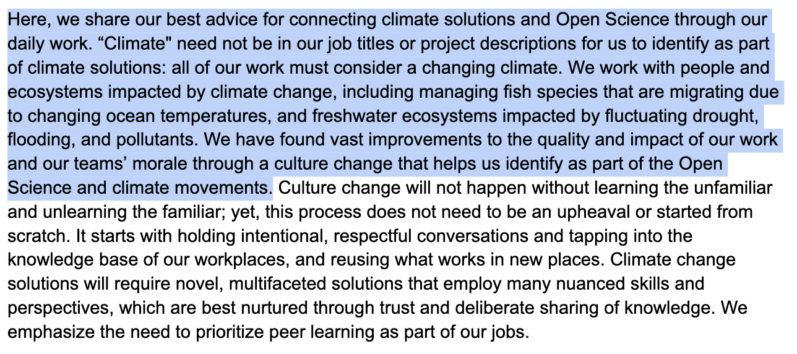
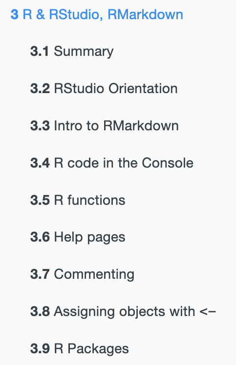
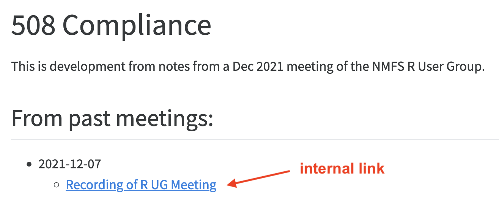
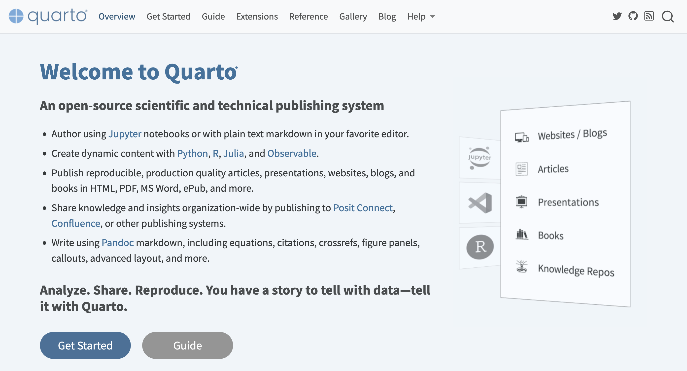
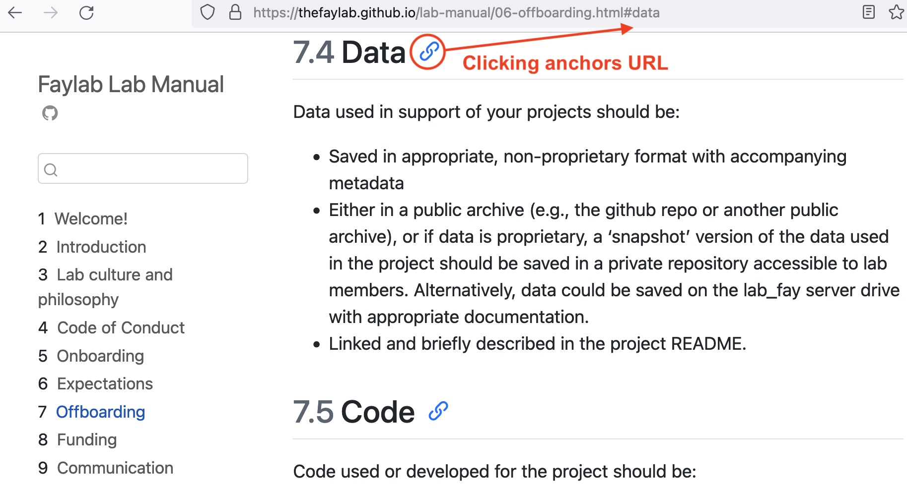
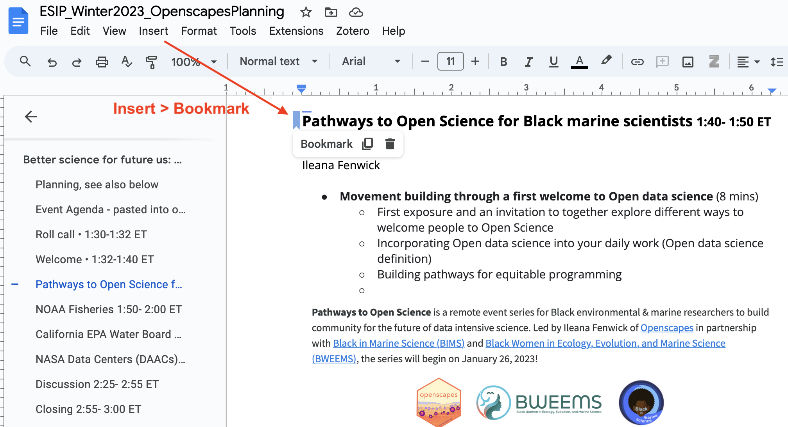
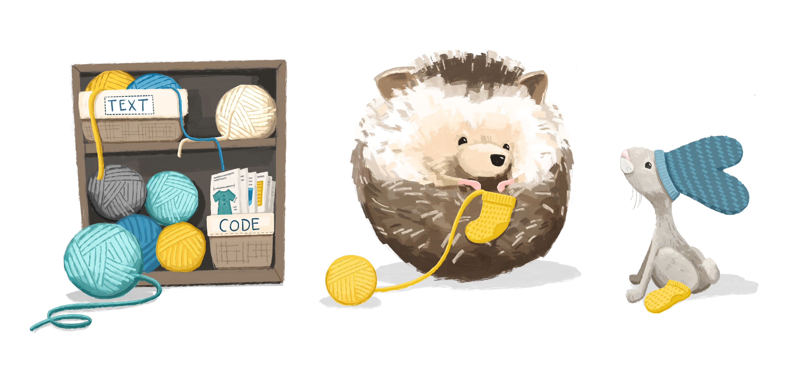
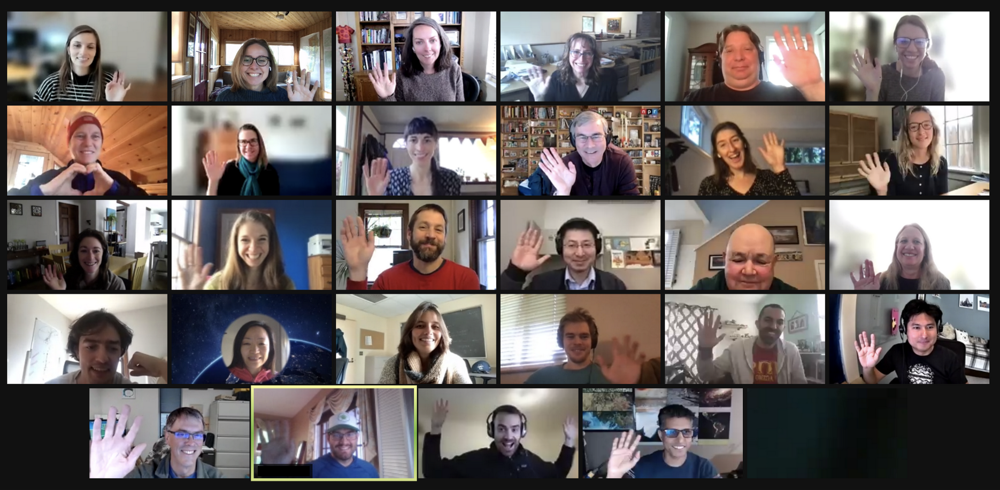
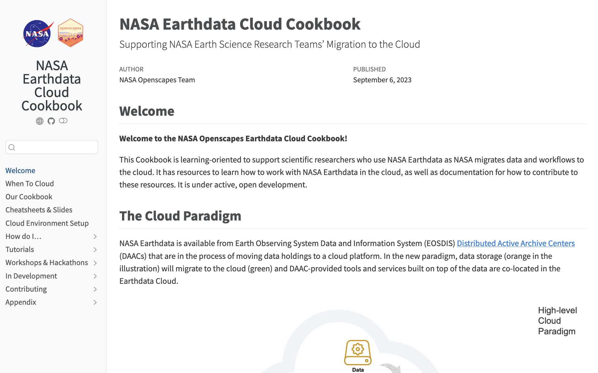

Thoughtful resources
Documenting things:
openly for future us
Julia Stewart Lowndes
in collaboration with Erin Robinson,
NASA Openscapes Mentors, &
the Openscapes Community
September 19, 2023
posit::conf(2023)
THINGS
all the things
- code & analyses
- teaching resources
- onboarding & community
- fieldwork/lab protocols
- events
- ideas, learning
FUTURE US
mindset & habit
ourselves, teams, communities
in the next hour, week, decades
intentional, inclusive
Documenting things doesn’t have to be painful
In fact, it’s supposed to be helpful.
It does take time and intention. Slowing down to speed up.
Purpose today: to help you document things effectively &
hear stories of how documentation can be visible and valued — and help teams be efficient, productive, and less lonely.
5-min lightning talk - practical tips (inspired by Jenny Bryan‚Äôs Naming Files üíô)
10-min stories - repeatable strategies (from NASA Openscapes & beyond TL;DR)
Documenting things
Have a place
Have an audience in mind
Design for readability & accessibility
Have a place
It doesn’t matter where at first. Just write it down.
Google Doc
Notion
Wiki
Forum/Issues/Discussion
Quarto/Jupyter book
Slide deck
Write as you go
Develop the habit of writing things down in this place; copy/paste from email.
Break down documentation as an otherwise big and looming task.
Keyboard shortcuts: Arrow keys + shift + option + command (Mac); + Ctrl + Fn (PC)

Write in a modular way
Writing in small bits is less daunting to write & maintain collaboratively.

No true order;
you’ll move things around.
Lowndes & Horst, R for Excel Users
Have an audience in mind
You’re writing this for someone. Often, many audiences with different entryways.
Make it engaging, specific. Doesn’t have to be dry or distant.
Bryan, Happy Git with R
Write in an inclusive tone
We’re in this together: Your readers are intelligent & here to learn from you.
Consider your goals and style that welcome readers; e.g. avoid words that trivialize
Avoid: “simply clone the repo”
- Purpose, Outcomes, Process (POP)
- Carpentries Curriculum Developers Handbook (CDH)
- eScience SnowEx Hackweek Team-building (slides & website)
Narrate code in small chunks
Write short narrations for your code as you’d say it out loud. Match this with your purpose; it’s especially important for teaching.
Quarto now has a new code annotation feature to help!
Amy Steiker & NASA Openscapes Mentors, NASA Earthdata Cloud Clinic
Share early
Share early to iterate and receive feedback. Open does not always mean public.
Consider permissions & leverage different technologies to leave breadcrumbs.

NOAA Fisheries Open Science, Resource Book
Design for readability & accessibility
Leverage defaults and best practices

Allaire et al, Quarto.org
Use section headers
Section headers are important for screen readers to describe sections and flow.
You can anchor directly to them to share an anchored URL.
Naming things üíô is key here - ‚Äúembrace the slug‚Äù

Fay Lab, The FayLab Manual
 Bookmark">
Clatterbuck, Fenwick et al, 3 approaches for the year of open science.
Use text formatting
Formatting helps your readers follow along.
Hyperlink the important text, not that this important thing is here.
Distinguish code with fonts; (in Markdown use backticks: `code` )
Alternative text (“alt text”)
Use alt text to describe the details and takehome messages in your visuals.
Caption: Knitting text and code
Alt text: A round hedgehog knitting a yellow sock. A rabbit with a teal beanie and wearing one yellow sock watches in anticipation. A shelf to the left of them contains yarn in a tote labeled TEXT, and knitting patterns in a tote labeled CODE.
Horst & Hill, The Hedgehog Series
Documenting things
Have a place
Have an audience in mind
Design for readability & accessibility
What’s possible from this
Putting a focus on documentation has enabled NASA
to collaborate across divisions and support users transitioning to Earthdata Cloud
Teaching NASA Earthdata Cloud
…by learning as a community

NASA Openscapes
- A mentor group across NASA Earth science data centers (DAACs)
- Co-creating and teaching common tutorials alongside researchers as we migrate analytical workflows to the Cloud
Steiker et al, Working with NASA Earthdata in the Cloud
See also: Çetinkaya-Rundel & Lowndes, Hello Quarto: share • collaborate • teach • reimagine
Place: Earthdata Cloud Cookbook

NASA Openscapes Mentors, NASA Earthdata Cloud Cookbook
Audience: Us first, then specific researchers
Steiker et al, Working with NASA Earthdata in the Cloud
Design: Meet people where they are
We don’t assume experience; we all can learn and teach.
Collaborating across workflows: .ipynb, .Rmd; VSCode, Jupyter, RStudio, MATLAB.
NASA Openscapes Community, NASA Earthdata Cloud Cookbook
Design: Reuse & complement existing work
Diátaxis & Divio, Documentation System
Framework - helped NASA Mentors focus on learning & problem oriented documentation.
Bri Lind at the NASA Hyperwall, Getting to Know Open Science
Open community - helped NASA Mentors learn, scope, co-develop, and share.
What’s possible from this
Putting a focus on documentation has enabled
the NASA Openscapes community
to grow through intentional onboarding
over 3 years
3 places for 3 audiences, designed for onboarding
Place: Project website
Audience: NASA Leadership
Overview:
invite participation,
info lives outside email
What’s possible from this
Putting a focus on documentation has enabled
NOAA Fisheries, Cal Water Boards, and others
to reuse this approach
Invest in both technical & social infrastructure
Documenting things ultimately saves time - fewer emails asking where things are; people feeling less lost and like they belong.
Requires intention & time; investment in psychological safety & growth mindset.
Have a place
Have an audience in mind
Design for readability & accessibility

Thank you
Openscapes team & community
Open source/science community far and wide, including CSS architect Sam Csik
This work was funded in part by NASA Award #20-TWSC20-2-0003
More depth on everything
- openscapes.org
- nasa-openscapes.github.io
- nmfs-openscapes.github.io
- cawaterboarddatacenter.github.io/swrcb-openscapes
- openscapes.github.io/pathways-to-open-science